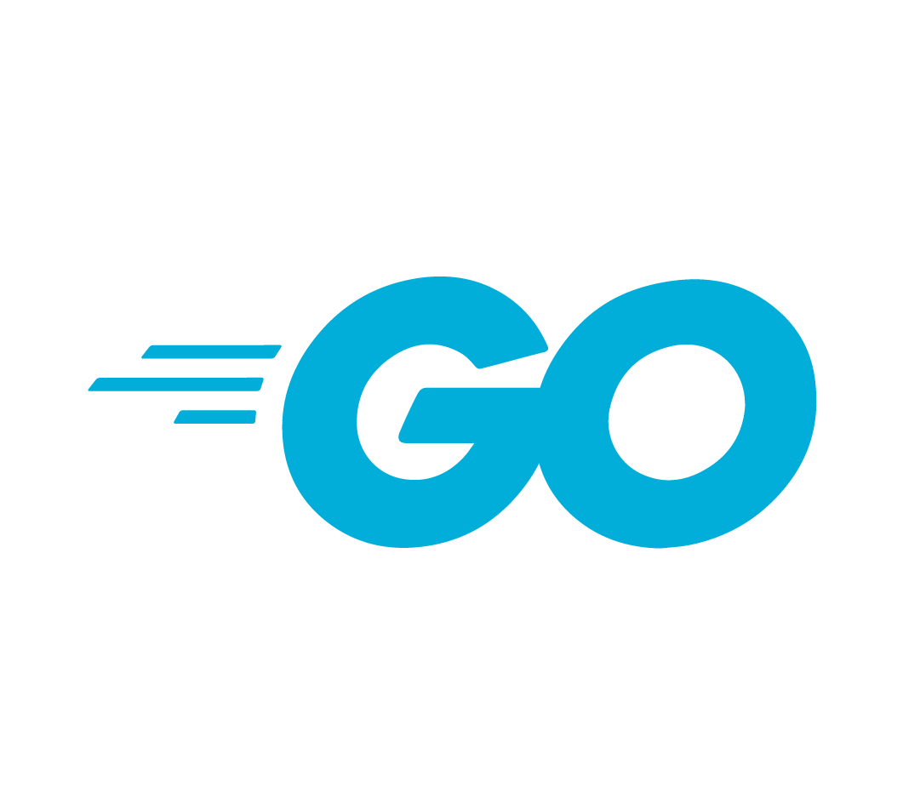

Go Beginner
Statically typed compiled language — minimalist syntax, structural typing, and high-performance concurrency models.
Table of Contents
Entry Point & Variables
Every execution file must declare its package context. Go utilizes explicit static type mapping or the short assignment operator (:=) for local type inference.
package main import "fmt" func main() { // Short assignment syntax (declares + infers automatically) hostUrl := "https://vidux.sh" var port int = 8080 // Explicit standard declaration fmt.Println("Server running on:", hostUrl, port) }
Data Types & Zero Values
Variables declared without an explicit initial value are automatically assigned their type-specific **Zero Value**, avoiding garbage memory pointers.
Conditionals & Inlines
Conditionals do not wrap statements inside parentheses. They also support a compact initialization statement scope execution path prior to evaluating conditions.
if score := getMetric(); score > 90 { fmt.Println("Optimized pipeline execution") } else if score >= 50 { fmt.Println("Stable system bounds") } else { fmt.Println("Alert: threshold drop") } // 'score' is entirely out of scope here! Safely contained within the block.
The Only Loop: For
To avoid keyword overhead, Go leverages the for keyword to handle all looping behaviors, including standard loops, conditional while structures, and endless cycles.
// 1. Classical initialization, condition, post-iteration for i := 0; i < 3; i++ { fmt.Println(i) } // 2. Evaluated condition loop (Replaces standard 'while' structures) n := 1 for n < 5 { n *= 2 } // 3. Collections traversal using the range generator unpack loop items := []string{"db", "cache"} for index, value := range items { fmt.Printf("Idx: %d Val: %s\n", index, value) }
Functions & Multi-Returns
Functions support passing multiple values as a tuple, a paradigm heavily integrated across the standard library for idiomatic error handling.
// Parameters group right-aligned types; returns are bundled at the end func divide(a, b float64) (float64, error) { if b == 0 { return 0, fmt.Errorf("division by zero error trap") } return a / b, nil } func main() { result, err := divide(10.0, 0.0) if err != nil { fmt.Println("Operation failed:", err) return } fmt.Println("Success mathematical operation result:", result) }
Pointers & Structs
Go lacks object-oriented class definitions. Custom data structures are defined using struct schemas, and behavior is attached using explicit method receivers.
type Repository struct { Name string Stars int } // Pointer receiver method (*). Allows mutations to the original caller memory func (r *Repository) AddStar() { r.Stars++ // Automatically dereferenced by Go syntax engine sugar } func main() { repo := Repository{Name: "ScratchMap", Stars: 42} repo.AddStar() // original instance updated directly via reference pointer passing }
& operator and read values using *, but you cannot manually shift pointer offsets.
Implicit Interfaces
Interfaces are satisfied **implicitly**. A concrete type does not need to explicitly implement an interface via a keyword; it simply needs to implement the matching method signatures.
type Speaker interface { Speak() string } type Developer struct{} // Satisfies Speaker protocol naturally without implement signatures declarations func (d Developer) Speak() string { return "Compile routines completed successfully." }
Goroutines & Channels
Concurrency is baked into the language core. Prefixing a call with go executes it on an ultra-lightweight thread, while **Channels** orchestrate data transfers between them.
func fetchWorker(ch chan string) { ch <- "Data payload arrived securely!" // Send data into channel pipeline } func main() { // Allocate a synchronous communication channel pipeline string pipeline dataStream := make(chan string) go fetchWorker(dataStream) // Launches asynchronous parallel task sequence msg := <-dataStream // Halts execution safely until worker resolves message fmt.Println(msg) }